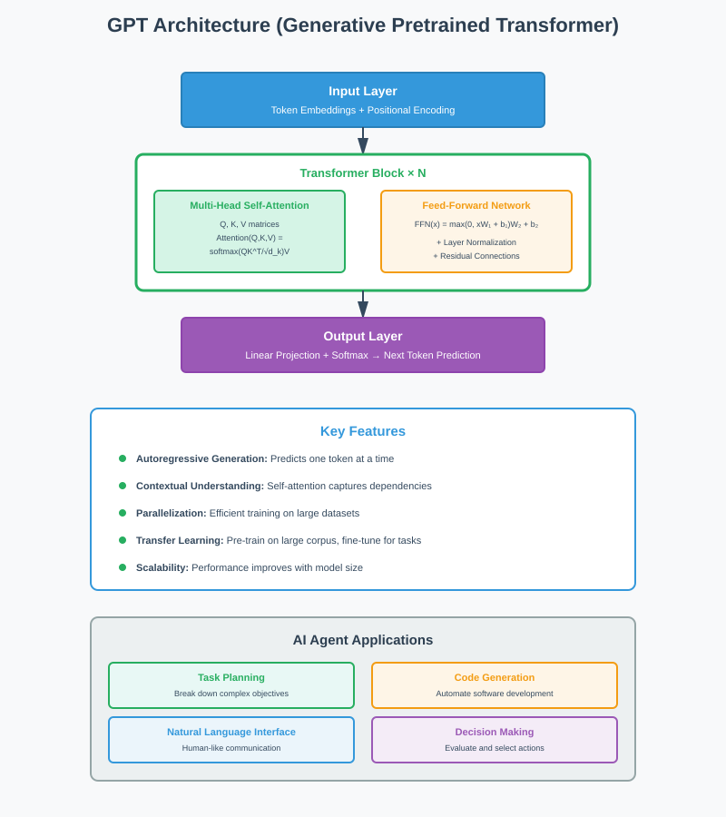
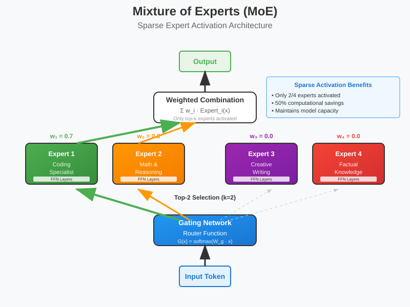
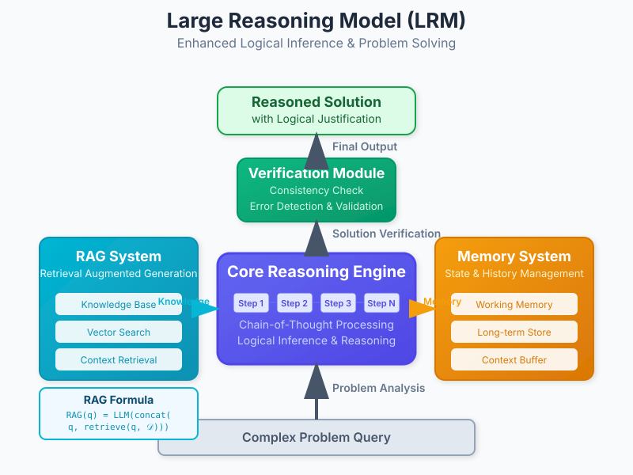
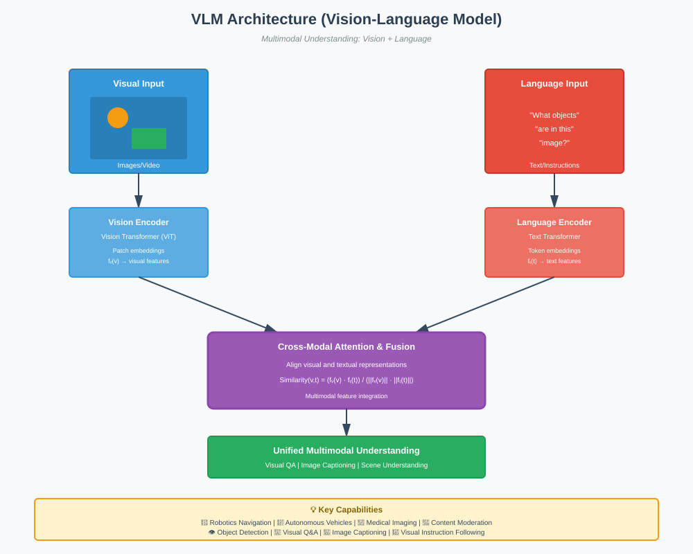
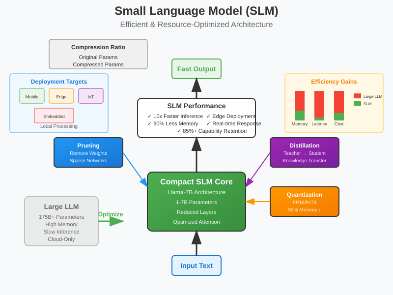
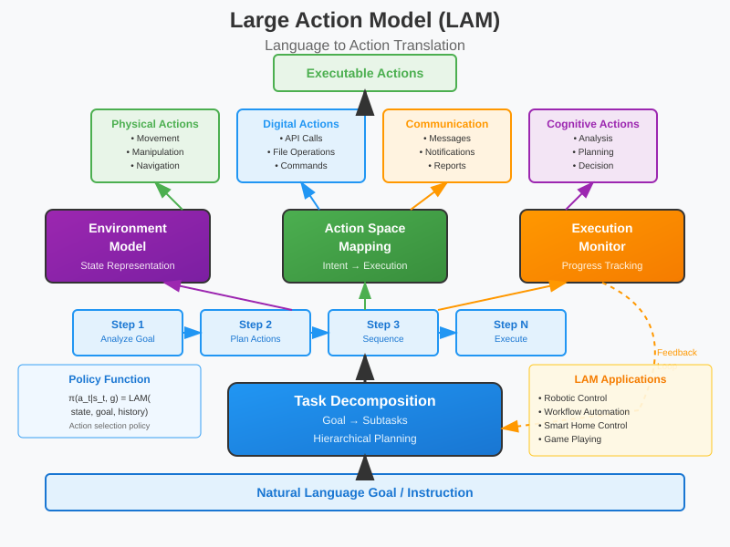
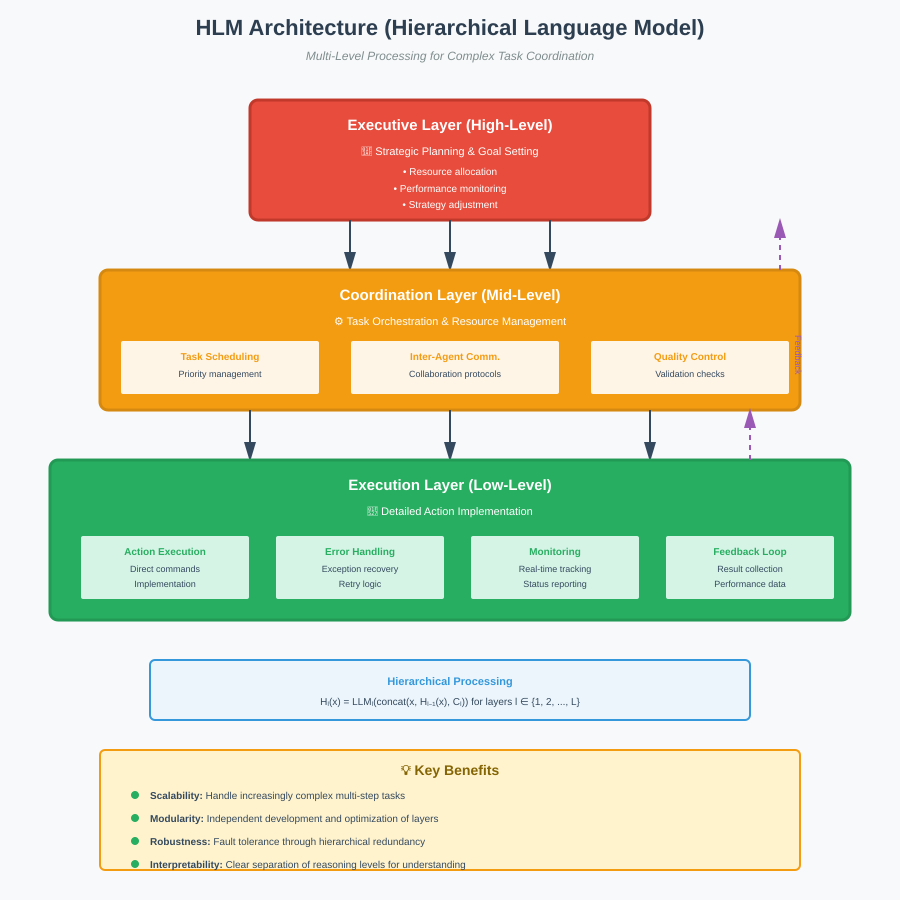
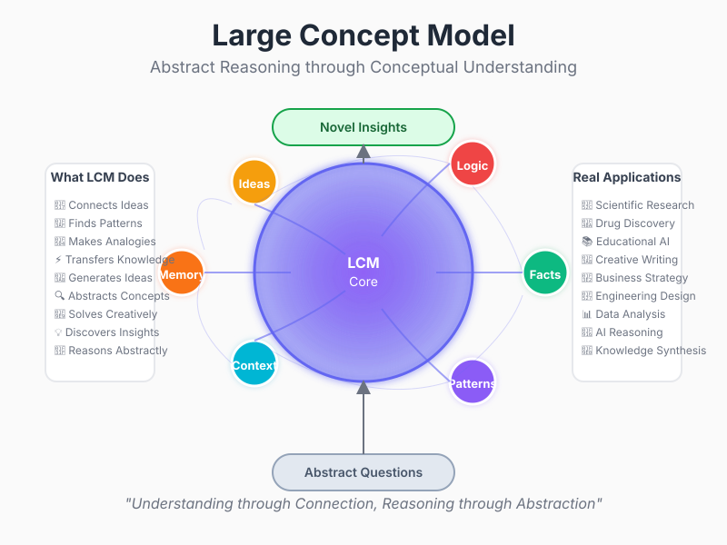

8 Types of LLMs Used in AI Agents


📋 Quick Navigation
- 🤖 GPT (Generative Pretrained Transformer)
- 🔀 MoE (Mixture of Experts)
- 🧠 LRM (Large Reasoning Model)
- 👁️ VLM (Vision-Language Model)
- ⚡ SLM (Small Language Model)
- 🎯 LAM (Large Action Model)
- 🏗️ HLM (Hierarchical Language Model)
- 💡 LCM (Large Concept Model)
- 📊 Comparison Table
- 📚 References & Further Reading
🤖 GPT (Generative Pretrained Transformer)

Overview
Generative Pretrained Transformers (GPTs) represent the foundational architecture for modern large language models. In AI agents, GPTs serve as the core reasoning engine, enabling natural language understanding, generation, and complex task execution through their transformer-based architecture.
Architecture Components
- Multi-Head Self-Attention: Enables the model to focus on different parts of the input sequence simultaneously
- Feed-Forward Networks: Process information through dense layers for feature transformation
- Layer Normalization: Stabilizes training and improves convergence
- Positional Encoding: Provides sequence order information to the attention mechanism
Mathematical Foundation
The attention mechanism is computed as:
Where:
- \(Q\) = Query matrix
- \(K\) = Key matrix
- \(V\) = Value matrix
- \(d_k\) = Dimension of key vectors
AI Agent Applications
- Task Planning: Breaking down complex objectives into manageable subtasks
- Natural Language Interface: Enabling human-like communication with users
- Code Generation: Automating software development tasks
- Decision Making: Evaluating options and selecting optimal actions
Implementation Example
from transformers import GPT2LMHeadModel, GPT2Tokenizer
# Initialize GPT model for agent communication
tokenizer = GPT2Tokenizer.from_pretrained('gpt2')
model = GPT2LMHeadModel.from_pretrained('gpt2')
# Agent reasoning pipeline
def agent_reasoning(task_description):
inputs = tokenizer.encode(task_description, return_tensors='pt')
outputs = model.generate(inputs, max_length=150, num_return_sequences=1)
return tokenizer.decode(outputs[0], skip_special_tokens=True)
🔀 MoE (Mixture of Experts)

Overview
Mixture of Experts (MoE) models revolutionize AI agent efficiency by utilizing specialized expert networks. This architecture enables agents to scale computational capacity while maintaining inference speed through selective expert activation.
Core Architecture
- Gating Network: Routes inputs to appropriate expert networks
- Expert Networks: Specialized sub-models for different task domains
- Sparse Activation: Only activates relevant experts per input
- Load Balancing: Ensures even distribution across experts
Gating Mechanism
The gating function determines expert selection:
Expert output combination:
Where: - \(G(x)_i\) = Gate weight for expert \(i\) - \(E_i(x)\) = Output from expert \(i\) - \(n\) = Number of experts
AI Agent Benefits
- Specialization: Different experts handle specific task types (reasoning, coding, creative writing)
- Efficiency: Reduced computational overhead through sparse activation
- Scalability: Easy addition of new experts for emerging capabilities
- Performance: Enhanced accuracy through domain-specific optimization
Expert Specialization Examples
- Coding Expert: Optimized for programming tasks and debugging
- Reasoning Expert: Enhanced logical inference and mathematical problem-solving
- Creative Expert: Specialized for content generation and creative writing
- Factual Expert: Focused on knowledge retrieval and fact-checking
🧠 LRM (Large Reasoning Model)

Overview
Large Reasoning Models (LRMs) represent specialized architectures designed for complex logical inference and problem-solving. In AI agents, LRMs provide enhanced reasoning capabilities through structured thinking processes and retrieval-augmented generation (RAG).
Reasoning Components
- Chain-of-Thought Processing: Step-by-step logical reasoning
- Memory Integration: Access to long-term and working memory systems
- RAG Integration: Real-time knowledge retrieval and synthesis
- Verification Mechanisms: Self-checking and consistency validation
RAG Architecture Integration
The RAG component enhances reasoning through:
Where: - \(q\) = Input query - \(\mathcal{D}\) = Knowledge database - \(\text{retrieve}\) = Retrieval function - \(\text{concat}\) = Concatenation operation
Reasoning Process Flow
- Problem Analysis: Decomposition of complex problems into sub-components
- Knowledge Retrieval: Accessing relevant information from external sources
- Logical Inference: Applying reasoning rules and logical operations
- Solution Synthesis: Combining insights into coherent solutions
- Verification: Checking solution validity and consistency
AI Agent Applications
- Scientific Research: Hypothesis generation and experimental design
- Legal Analysis: Case law research and argument construction
- Medical Diagnosis: Symptom analysis and treatment recommendation
- Financial Planning: Risk assessment and investment strategy
👁️ VLM (Vision-Language Model)

Overview
Vision-Language Models (VLMs) enable AI agents to process and understand multimodal information, combining visual perception with natural language understanding. These models are crucial for agents operating in real-world environments.
Multimodal Architecture
- Vision Transformer (ViT): Processes visual input through attention mechanisms
- Language Encoder: Handles textual information and instructions
- Cross-Modal Attention: Aligns visual and textual representations
- Fusion Layers: Combines multimodal features for unified understanding
Cross-Modal Alignment
The alignment between vision and language is achieved through:
Where: - \(f_v(v)\) = Visual feature extractor - \(f_t(t)\) = Text feature extractor - \(v\) = Visual input - \(t\) = Text input
Capabilities
- Image Understanding: Object detection, scene analysis, and visual reasoning
- Visual Question Answering: Responding to queries about visual content
- Image Captioning: Generating descriptive text for images
- Visual Instruction Following: Executing tasks based on visual cues
AI Agent Use Cases
- Robotics: Navigation and object manipulation in physical environments
- Autonomous Vehicles: Scene understanding and decision making
- Medical Imaging: Diagnostic assistance and report generation
- Content Moderation: Automated detection of inappropriate visual content
Implementation Framework
from transformers import VisionEncoderDecoderModel, ViTImageProcessor, GPT2TokenizerFast
# Initialize VLM components
processor = ViTImageProcessor.from_pretrained("nlpconnect/vit-gpt2-image-captioning")
tokenizer = GPT2TokenizerFast.from_pretrained("nlpconnect/vit-gpt2-image-captioning")
model = VisionEncoderDecoderModel.from_pretrained("nlpconnect/vit-gpt2-image-captioning")
def process_visual_input(image, instruction):
# Process image and generate response
pixel_values = processor(image, return_tensors="pt").pixel_values
generated_ids = model.generate(pixel_values, max_length=50)
return tokenizer.decode(generated_ids[0], skip_special_tokens=True)
⚡ SLM (Small Language Model)

Overview
Small Language Models (SLMs) provide efficient, lightweight solutions for AI agents operating under resource constraints. Models like Llama demonstrate that smaller architectures can achieve impressive performance while maintaining computational efficiency.
Efficiency Optimizations
- Parameter Reduction: Fewer parameters while maintaining capability
- Quantization: Reduced precision for faster inference
- Pruning: Removal of unnecessary network connections
- Knowledge Distillation: Learning from larger teacher models
Architecture Optimizations
The efficiency gains are achieved through:
Inference speed improvement:
SLM Advantages
- Low Latency: Faster response times for real-time applications
- Reduced Memory: Lower RAM and storage requirements
- Edge Deployment: Suitable for mobile and IoT devices
- Cost Efficiency: Lower computational and operational costs
AI Agent Applications
- Mobile Assistants: Smartphone and tablet applications
- IoT Devices: Smart home and industrial automation
- Edge Computing: Local processing without cloud dependency
- Embedded Systems: Resource-constrained hardware environments
Performance Comparison
| Model Type | Parameters | Inference Speed | Memory Usage | Performance |
|---|---|---|---|---|
| Large LLM | 175B+ | Slow | High | Excellent |
| Medium LLM | 7-70B | Moderate | Medium | Very Good |
| SLM | 1-7B | Fast | Low | Good |
🎯 LAM (Large Action Model)

Overview
Large Action Models (LAMs) specialize in translating natural language instructions into executable actions. These models bridge the gap between language understanding and real-world task execution in AI agent systems.
Action Planning Components
- Task Decomposition: Breaking complex goals into actionable steps
- Action Space Mapping: Translating intentions to specific actions
- Environment Modeling: Understanding action contexts and constraints
- Execution Monitoring: Tracking progress and handling failures
Action Planning Algorithm
The action planning process follows:
Where: - \(\pi\) = Policy function - \(a_t\) = Action at time \(t\) - \(s_t\) = Current state - \(g\) = Goal specification - \(h_{t-1}\) = Action history
Action Categories
- Physical Actions: Movement, manipulation, and environmental interaction
- Digital Actions: API calls, file operations, and system commands
- Communication Actions: Message sending, notification, and reporting
- Cognitive Actions: Analysis, planning, and decision making
AI Agent Integration
- Robotic Control: Direct motor command generation for physical robots
- Workflow Automation: Business process execution and optimization
- Game Playing: Strategic action selection in competitive environments
- Smart Home Control: Device management and automation
Implementation Pipeline
class ActionPlanningAgent:
def __init__(self, lam_model):
self.lam = lam_model
self.action_executor = ActionExecutor()
def plan_and_execute(self, goal, current_state):
# Generate action sequence
action_plan = self.lam.generate_plan(goal, current_state)
# Execute actions sequentially
for action in action_plan:
result = self.action_executor.execute(action)
if not result.success:
# Replan if action fails
return self.plan_and_execute(goal, result.new_state)
return "Goal achieved successfully"
🏗️ HLM (Hierarchical Language Model)

Overview
Hierarchical Language Models (HLMs) implement multi-level processing architectures that mirror human cognitive hierarchies. These models enable AI agents to handle complex tasks through structured, layered reasoning approaches.
Hierarchical Structure
- High-Level Planning: Strategic goal setting and major milestone definition
- Mid-Level Coordination: Task orchestration and resource allocation
- Low-Level Execution: Detailed action implementation and monitoring
- Cross-Level Communication: Information flow between hierarchical layers
Mathematical Framework
The hierarchical processing is modeled as:
Where: - \(H_l\) = Hierarchical layer \(l\) - \(\text{LLM}_l\) = Language model at layer \(l\) - \(C_l\) = Context from peer layers - \(l \in \{1, 2, ..., L\}\) for \(L\) layers
Layer Responsibilities
Executive Layer (Top) - Strategic planning and goal prioritization - Resource allocation and high-level decision making - Performance monitoring and strategy adjustment
Coordination Layer (Middle) - Task scheduling and dependency management - Inter-agent communication and collaboration - Quality control and validation
Execution Layer (Bottom) - Detailed action implementation - Error handling and recovery - Real-time monitoring and feedback
AI Agent Benefits
- Scalability: Handle increasingly complex multi-step tasks
- Modularity: Independent development and optimization of layers
- Robustness: Fault tolerance through hierarchical redundancy
- Interpretability: Clear separation of reasoning levels
Use Case Examples
- Project Management: Multi-level task breakdown and execution
- Research Coordination: Literature review, hypothesis generation, and experiment design
- Software Development: Architecture design, implementation, and testing
- Supply Chain Management: Strategic planning, operational coordination, and execution monitoring
💡 LCM (Large Concept Model)

Overview
Large Concept Models (LCMs) focus on learning and manipulating abstract concepts, enabling AI agents to perform high-level reasoning about ideas, relationships, and conceptual frameworks. These models excel at knowledge representation and conceptual understanding.
Concept Learning Architecture
- Concept Extraction: Identifying abstract concepts from input data
- Relationship Modeling: Understanding connections between concepts
- Conceptual Reasoning: Performing inference at the concept level
- Knowledge Integration: Combining concepts from multiple domains
Conceptual Representation
Concepts are represented in a semantic space:
Concept relationships are modeled through:
Where: - \(e_i\) = Embedding dimensions - \(W_r\) = Relation weight matrix - \(f\) = Activation function
Concept Operations
- Concept Composition: Combining multiple concepts into new abstractions
- Concept Abstraction: Generalizing from specific instances to broader categories
- Concept Analogy: Finding similarities across different domains
- Concept Transfer: Applying knowledge from one domain to another
AI Agent Applications
- Scientific Discovery: Hypothesis generation and theory development
- Creative Problem Solving: Novel solution generation through concept combination
- Educational Systems: Adaptive learning based on conceptual understanding
- Knowledge Management: Organizing and retrieving information by concepts
Implementation Framework
class ConceptualAgent:
def __init__(self, lcm_model):
self.lcm = lcm_model
self.concept_graph = ConceptGraph()
def analyze_concepts(self, input_text):
# Extract concepts from input
concepts = self.lcm.extract_concepts(input_text)
# Build concept relationships
for concept in concepts:
related = self.lcm.find_related_concepts(concept)
self.concept_graph.add_relationships(concept, related)
return self.concept_graph.get_insights()
def conceptual_reasoning(self, query):
# Perform reasoning at concept level
relevant_concepts = self.concept_graph.query(query)
reasoning_chain = self.lcm.reason_with_concepts(relevant_concepts)
return reasoning_chain
📊 Comparison Table
| Model Type | Primary Use Case | Computational Cost | Specialization | Best For |
|---|---|---|---|---|
| GPT | General language tasks | High | General purpose | Text generation, conversation |
| MoE | Efficient scaling | Variable | Multi-domain | Large-scale deployment |
| LRM | Complex reasoning | High | Logic & inference | Problem-solving, analysis |
| VLM | Multimodal tasks | High | Vision + Language | Robotics, visual AI |
| SLM | Resource-constrained | Low | Efficiency | Mobile, edge computing |
| LAM | Action execution | Medium | Action planning | Automation, robotics |
| HLM | Complex coordination | High | Hierarchical tasks | Project management |
| LCM | Conceptual reasoning | Medium | Abstract thinking | Research, education |
Selection Guidelines
Choose GPT when: - General-purpose language understanding is needed - Text generation quality is paramount - Standard NLP tasks are the primary focus
Choose MoE when: - Scaling to very large model sizes - Multiple specialized capabilities are required - Inference efficiency at scale is important
Choose LRM when: - Complex logical reasoning is essential - Step-by-step problem solving is required - Integration with knowledge bases is needed
Choose VLM when: - Visual understanding is crucial - Multimodal interaction is required - Real-world environment interaction is needed
Choose SLM when: - Resource constraints are significant - Real-time response is critical - Edge deployment is required
Choose LAM when: - Action execution is the primary goal - Physical or digital automation is needed - Plan-to-action translation is crucial
Choose HLM when: - Multi-level task decomposition is required - Complex project coordination is needed - Hierarchical decision making is important
Choose LCM when: - Abstract conceptual reasoning is required - Knowledge discovery is the goal - Cross-domain transfer is needed
📚 References & Further Reading
Academic Papers
- "Attention Is All You Need" - Vaswani et al. (2017)
- ArXiv
-
Foundational transformer architecture paper
-
"Switch Transformer: Scaling to Trillion Parameter Models" - Fedus et al. (2021)
- ArXiv
-
Mixture of Experts implementation and scaling
-
"Chain-of-Thought Prompting Elicits Reasoning in Large Language Models" - Wei et al. (2022)
- ArXiv
-
Reasoning capabilities in language models
-
"Flamingo: a Visual Language Model for Few-Shot Learning" - Alayrac et al. (2022)
- ArXiv
- Vision-language model architecture and applications
Implementation Resources
- Hugging Face Transformers Library
- Documentation
-
Comprehensive model implementations and examples
-
LangChain Framework
- Documentation
- Agent development and LLM integration tools
Specialized Models
- Llama 2 Technical Report - Touvron et al. (2023)
- ArXiv
-
Small language model optimization techniques
-
"Constitutional AI: Harmlessness from AI Feedback" - Bai et al. (2022)
- ArXiv
- AI safety and alignment for agent systems
Additional Resources
- OpenAI GPT Documentation: OpenAI API Docs
- Google Vertex AI: Vertex AI Documentation
- Anthropic Claude Documentation: Claude API Docs
This documentation provides a comprehensive overview of the 8 types of LLMs used in AI agents. For hands-on implementation examples, explore the accompanying Colab notebooks and experiment with the provided code samples.